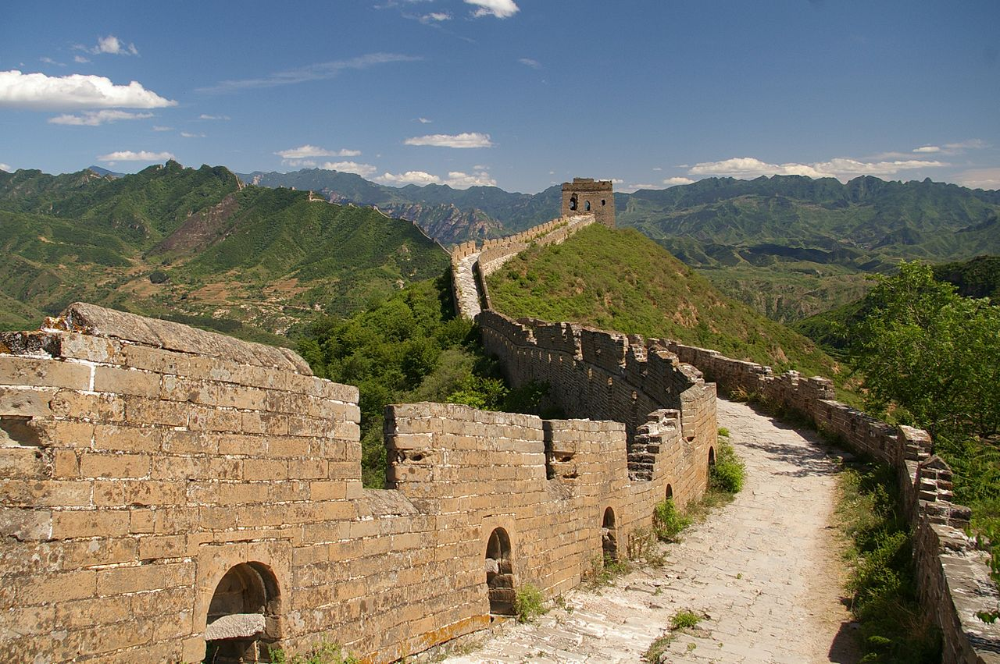
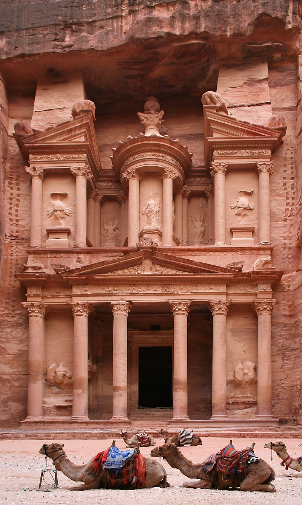
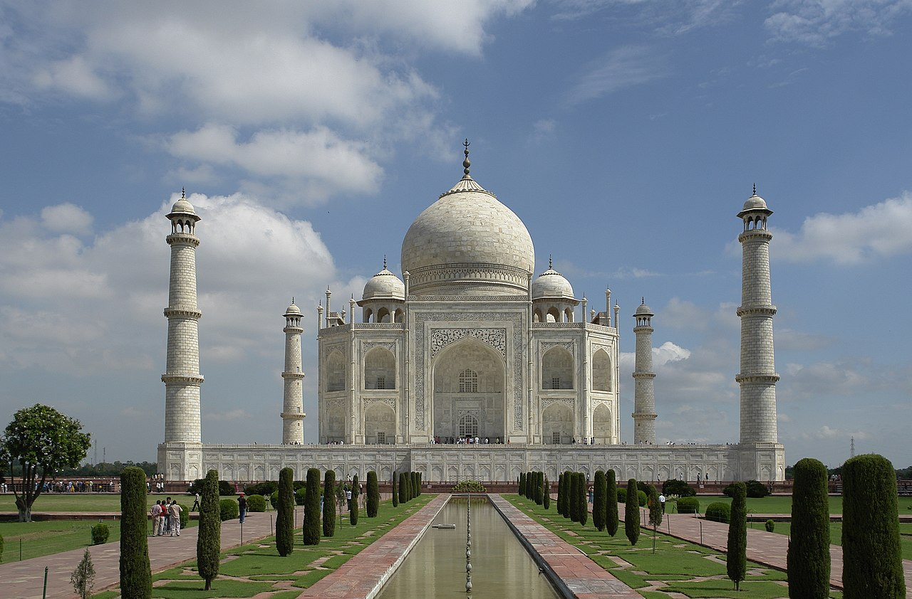
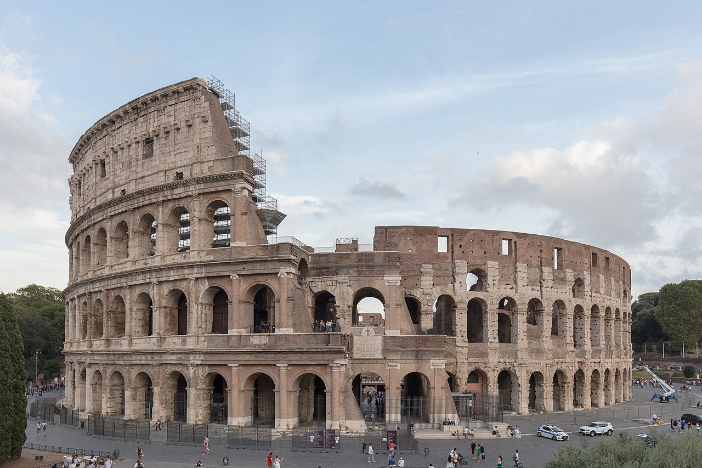
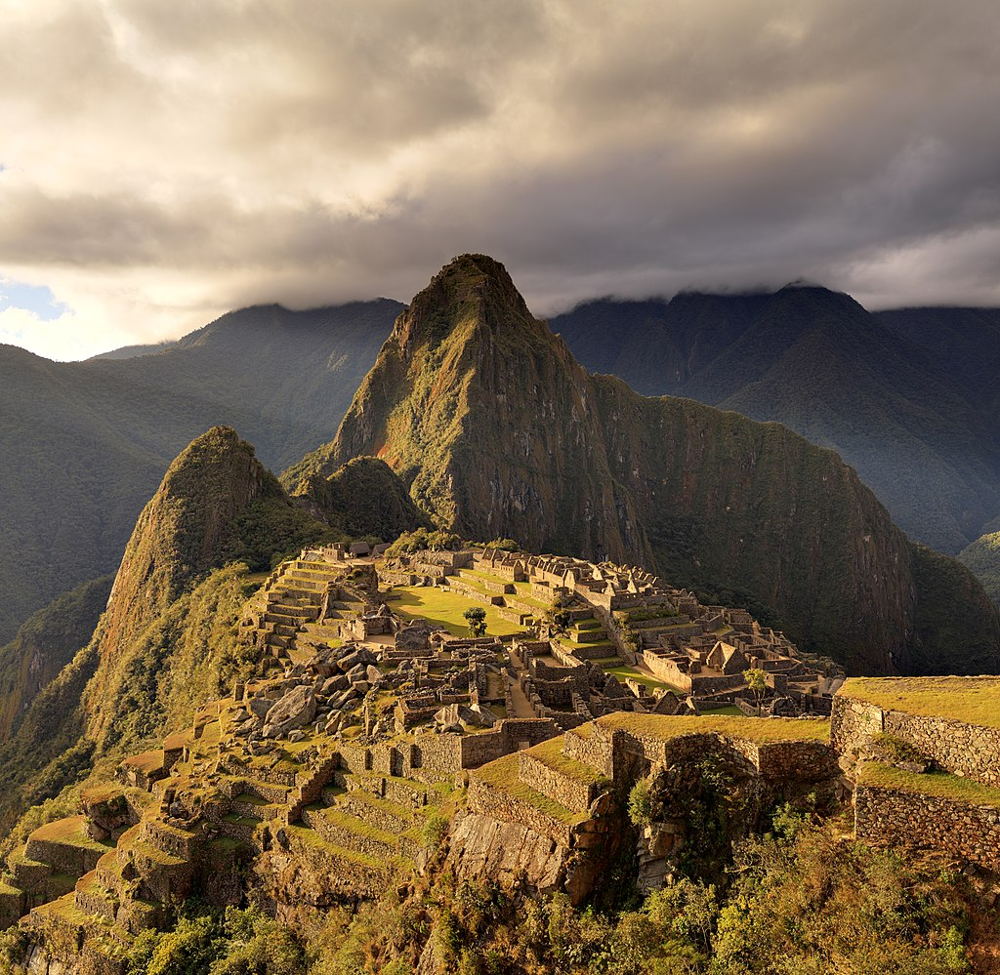
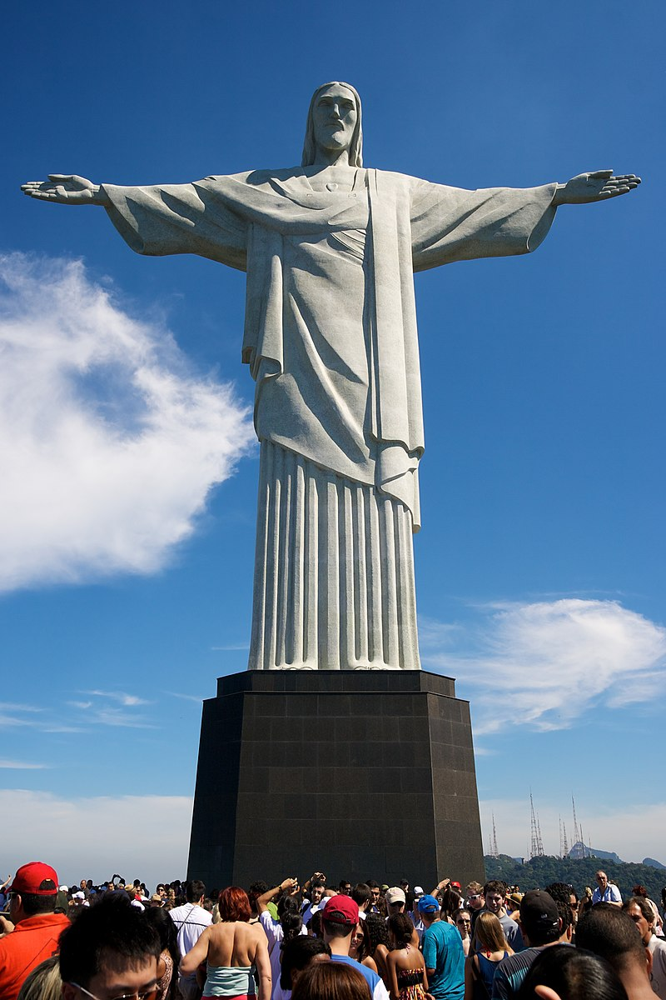
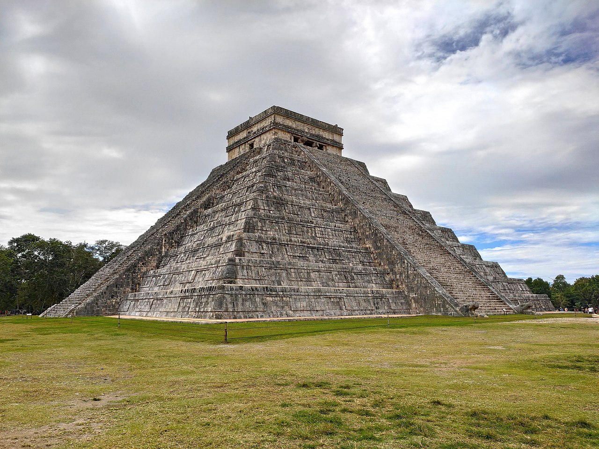

Вели́кий кита́йський мур (кит. 长城, пін. chángchéng, «довга стіна») — низка кам'яних та земляних укріплень у північній частині Китаю, збудованих з метою захисту північних кордонів Китайської імперії від вторгнень різних кочових племен. Найстаріша частина була збудована ще в 7 столітті до н. е. Пізніше будівництво нових секцій тривало аж до 16 століття включно. Одна з найвідоміших частин муру збудована в 220—206 до н. е. першим імператором Китаю Цінь Ши Хуан-ді. Небагато з них дійшли до наших днів. Більшість нині існуючих були збудовані в епоху династії Мін.  Великий китайський мур простягається від Шаньхайгуань на сході до Лобнор на заході по дузі, що приблизно розмежовує південні околиці Внутрішньої Монголії. Археологічне дослідження 2008 року дійшло висновку, що Великий мур, побудований в епоху династії Мін (1368—1644), з усіма його секціями простягається на 8 851,8 км. Ця довжина складається з 6259 км самого муру, 359,7 км траншей та 2 232,5 км природних захисних бар'єрів, таких як гори та річки. Його загальна протяжність згідно з результатами 2012 року становить 21 196,18 кілометрів. Уздовж усього Великого муру споруджені каземати для охорони та сторожові вежі, а в головних гірських проходах — фортеці. Великий китайський мур зберігся до наших днів переважно у вигляді кам'яного захисного муру династії Мін (XVII століття).
Сім нових чудес світу — проєкт, організований фондом «Нові сім див світу» (NOWC), який намагався об'єднати сім чудес стародавнього світу із списком сучасних чудес з метою збереження культурної спадщини для майбутніх поколінь, аби уникнути повторення ситуації з сімома стародавніми дивами світу. Засновник фонду — швейцарський мільйонер Бернард Вебер. Було вирішено вибрати сім нових див світу шляхом всесвітнього голосування в три етапи. В результаті першого прямого голосування було відібрано 77 об'єктів, другого — 21 об'єкт. Переможці оголошені 7 липня 2007 року в Лісабоні (Португалія). Голосування проходило за допомогою SMS, телефону або Інтернету.
Пе́тра (араб. البتراء, аль-Батра́; дав.-гр. Πέτρα — скеля) — стародавнє місто та найпопулярніша історична пам'ятка Йорданії. В минулому столиця Ідумеї та Набатейського царства, пізніше — важливе місто Римської імперії. В 1985 році Петра була внесена до переліку Світової спадщини ЮНЕСКО, а в 2007 році була обрана одним з Семи нових чудес світу.  Місто розташоване на території сучасної Йорданії, на висоті понад 900 метрів над рівнем моря і 660 метрів над навколишньою місцевістю, долиною Арави, у вузькому каньйоні Сік. Прохід в долину — через ущелини, розташовані на півночі і на півдні, тоді як зі сходу і заходу скелі прямовисно обриваються, утворюючи природні стіни до 60 метрів у висоту.
Та́дж Маха́л — монумент, мавзолей, розташований за два кілометри від міста Аґра (Індія), на березі річки Джамна. Збудований імператором Шах Джахан Мугалом як мавзолей для своєї перської дружини Мумтаз-Махал (в дівоцтві Арумад Бану Бегум), також відомої як Мутмаз-Ул-Замані, племінниці впливового царедворця при дворі індійського правителя. Будівництво зайняло 22 роки (з 1630 по 1652 рік).  Слова Тадж і Махал походять з мови урду. Тадж означає «корона» або «діадема», махал — «палац», «будинок» або «маєток». За іншою теорією, назва Тадж Махал походить від «Тейо Махалая» — назви бога Шиви мовою гінді.
Колізе́й (лат. Colosseum; італ. Colosseo) або амфітеа́тр Фла́віїв (лат. Amphitheatrum Flavium; італ. Anfiteatro Flavio) — амфітеатр, пам'ятка давньоримської архітектури, одна з найграндіозніших та найвідоміших споруд античного світу. Будівництво амфітеатру було розпочато за наказом імператора Веспасіана у 72 році н. е. і завершено у 80 році н. е. вже за правління його сина, Тита. Головним архітектором вірогідно був Квінітій Атерій. Розташований в Римі, в низині між Есквілінським, Палатинським та Целійським пагорбами. На момент завершення будівництва був наймісткішим амфітеатром у світі — вміщував до 50 тис. глядачів. Колізей діяв з 80 по 404 роки, переважно як місце гладіаторських боїв, видовищних битв із тваринами та публічних страт.  Одразу по завершенні будівництва споруда дістала назву Амфітеатр Флавіїв (лат. Amphitheatrum Flavium) на честь династії Флавіїв, представниками якої були імператори Веспасіан і Тит. Під час правління Веспасіана в 72 році н. е. було розпочате будівництво амфітеатру, а в 80 році воно було завершено його сином та наступним імператором, Титом. Іншу свою назву, Колізей, амфітеатр отримав через розташування поруч з ним величезної статуї Колоса Нерона, яка зображувала колишнього римського імператора Нерона. Пізніше образ Нерона був замінений на образ бога сонця Геліоса (лат. Colossus soli). Невдовзі статуя була чи то зруйнована внаслідок землетрусу, чи то демонтована під час вестготської навали на Рим у 410 році. Остаточно амфітеатр став йменуватися Колізеєм близько 1000 року н. е.
Ма́чу-Пі́кчу (кеч. Machu Pikchu — «стара вершина») — доколумбове місто інків, розташоване в Андах на висоті 2400 метрів на вершині гірського хребта над долиною річки Урубамби в Перу, за 80 км на північний захід від міста Куско. Оригінальна назва міста — Уайна-Пікчу («нова вершина»). Мачу Пікчу також називають «місто в небесах», «місто серед хмар», «втраченим містом інків», є символом Імперії інків.  Вважається, що місто було створене як священний гірський притулок великим правителем інків Пачакутеком за сторіччя до завоювання його імперії, тобто приблизно в 1440 році[3], і функціонувало до 1532 року, коли іспанці вдерлися на територію імперії, після чого місто було залишене його мешканцями. Іспанські конкістадори так і не дісталися до Мачу-Пікчу. Це місто не було зруйноване. Більш ніж на 400 років місто було забуте і перебувало в запустінні, але вже у 1911 році знову отримало всесвітню відомість. Його виявив американський дослідник з Єльського університету, професор Хайрам Бінґем 24 липня 1911 року. Коли він добрався сюди у супроводі виділеного урядом загону охорони й місцевого хлопчика-провідника, він виявив селян, що жили там. Як вони розповіли йому, вони жили там «вільними, без небажаних візитерів, чиновників, що вербують в армію „добровольців“, або збирачів податків». Місто було в запустінні. Крім того, тут раніше вже побували любителі визначних пам'яток, що залишили свої накреслені вугіллям імена на гранітних стінах. І сам Хайрам Бінґем в ході трьох своїх експедицій вивіз до США близько 5 тис. артефактів. Відтоді Мачу-Пікчу став важливою туристичною пам'яткою. Територія навколо міста в 1981 році була проголошена історичним заповідником, який в 1983 році був внесений до списку об'єктів Світової спадщини ЮНЕСКО. У 2007 році Мачу-Пікчу вшанований званням Нового чуда світу.
«Христос-Спаситель» (порт. Cristo Redentor) — статуя Ісуса Христа в Ріо-де-Жанейро, Бразилія. Статуя має розмір 39,6 м заввишки (розмах рук 28 метрів), важить 1145 тонн, і знаходиться на вершині 200-метрової гори Корковаду в національному парку ліс Тіжука, в межах міста. Збудована як символ християнства, статуя стала символом Ріо-де-Жанейро і Бразилії.  Освітлення в нічний час статуї Христа-Спасителя світлом безлічі прожекторів, створює ефект, немовби Ісус спускається з небес, обіймаючи місто. Цікавим є той факт, що спочатку освітлення статуї здійснювалося з самого Риму (Італія) за допомогою радіохвиль. Але оскільки відстань від Риму до статуї Христа-Спасителя становить понад 9000 км, через погану погоду в освітленні дуже часто траплялися перебої. У зв'язку з цим було прийнято рішення здійснювати освітлення безпосередньо з Ріо-де-Жанейро. Статуя Христа-Спасителя в Ріо-де-Жанейро (Бразилія) в котрий раз поспіль підсвічується в кольори українського прапора з нагоди Дня Незалежності України. Так, з нагоди Дня Державного Прапора України, 32-ї річниці Незалежності України та Дня української громади в Бразилії монумент Христа-Спасителя у Ріо-де-Жанейро знову засяяв синьо-жовтими кольорами.
Чичен-Іца (науатль: Chichen Itza, вимова: /tʃiːˈtʃɛn iːˈtsɑː/, від юкатецького словосполучення: chich'en itza' — «біля виходу джерела Іца») — стародавнє місто на півночі Юкатан. Чичен-Іца розташована у північній частині півострова Юкатан, в 120 кілометрах на південний схід від міста Мерида.  Засноване, приблизно 455 року (згідно з книгою М. Стінгла, «Таємниці індіанських пірамід») невідомими натепер племенами мая. Тоді місто мало назву, яку дослідники розшифровують як Вук-Йабналь. Стосовно державного устрою замало відомостей, у написах того періоду зовсім відсутні згадки про священних ахавів. У цей період держава була залежною від царства Талол зі столицею в Ек-Баламі. Правителі Чичен-Іци носили титул «священного кокоома» або ачлевааха. У середині 870-х років Вук-Йабналь на чолі із К'ак'упакаль-К'авіілєм скинув залежність від Ек-Балама.
Кандидати
Серед інших кандидатів, в проєкті брали участь: Аахенський собор; Собор Святого Сімейства (Барселона); Версальський палац; Пізанська вежа; Теотіуакан; Палац дожів (Венеція); Блакитна мечеть; Палац Потала; Сана; Емпайр-Стейт-Білдінґ; Золоті Ворота (міст); Біг-Бен; Тікаль; Сі-Ен Тауер; Бурдж аль-Араб; Заборонене місто; Тайбей 101; Вежі Петронас; Атоміум; Печера Ласко; Мостар; Батьківщина мати (Київ) та інші.
Джерело: Вікіпедія